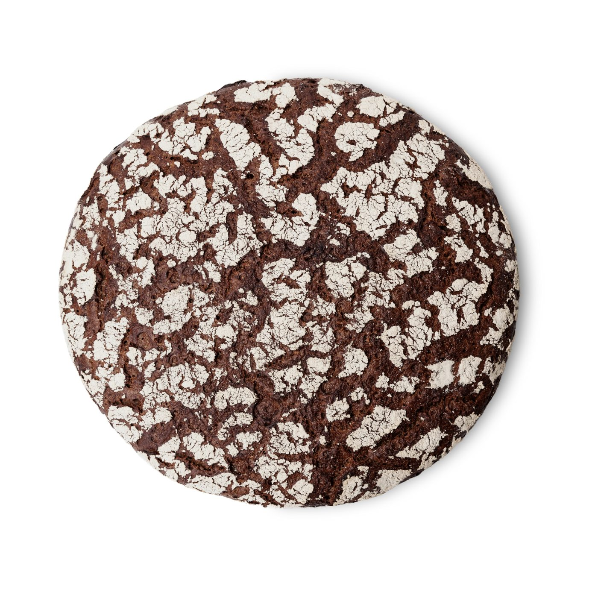
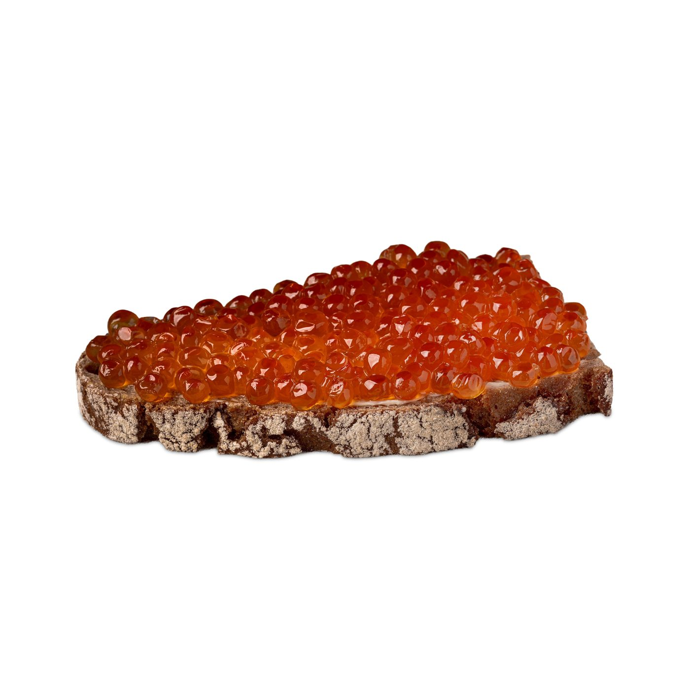
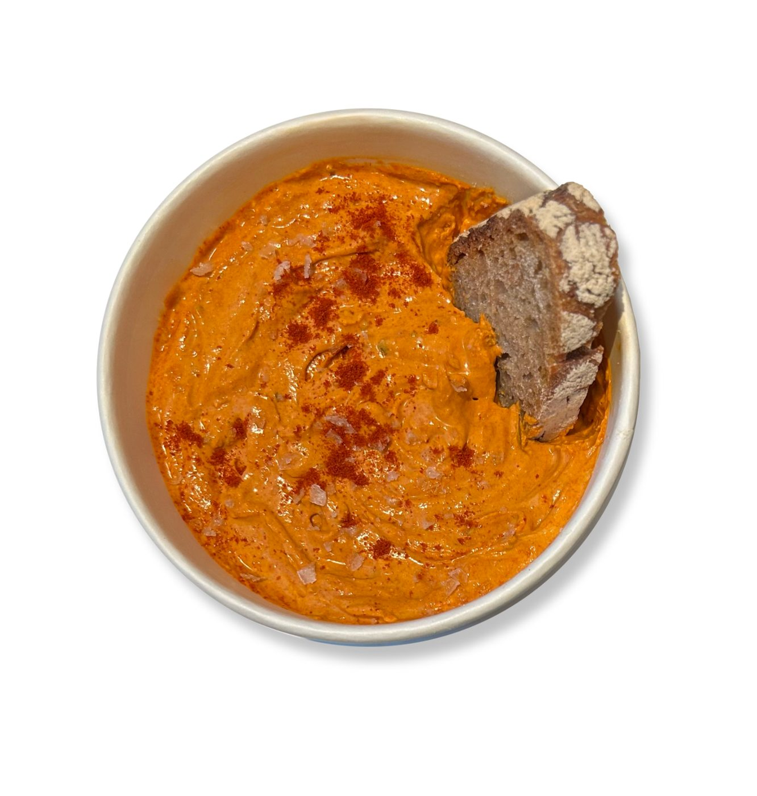
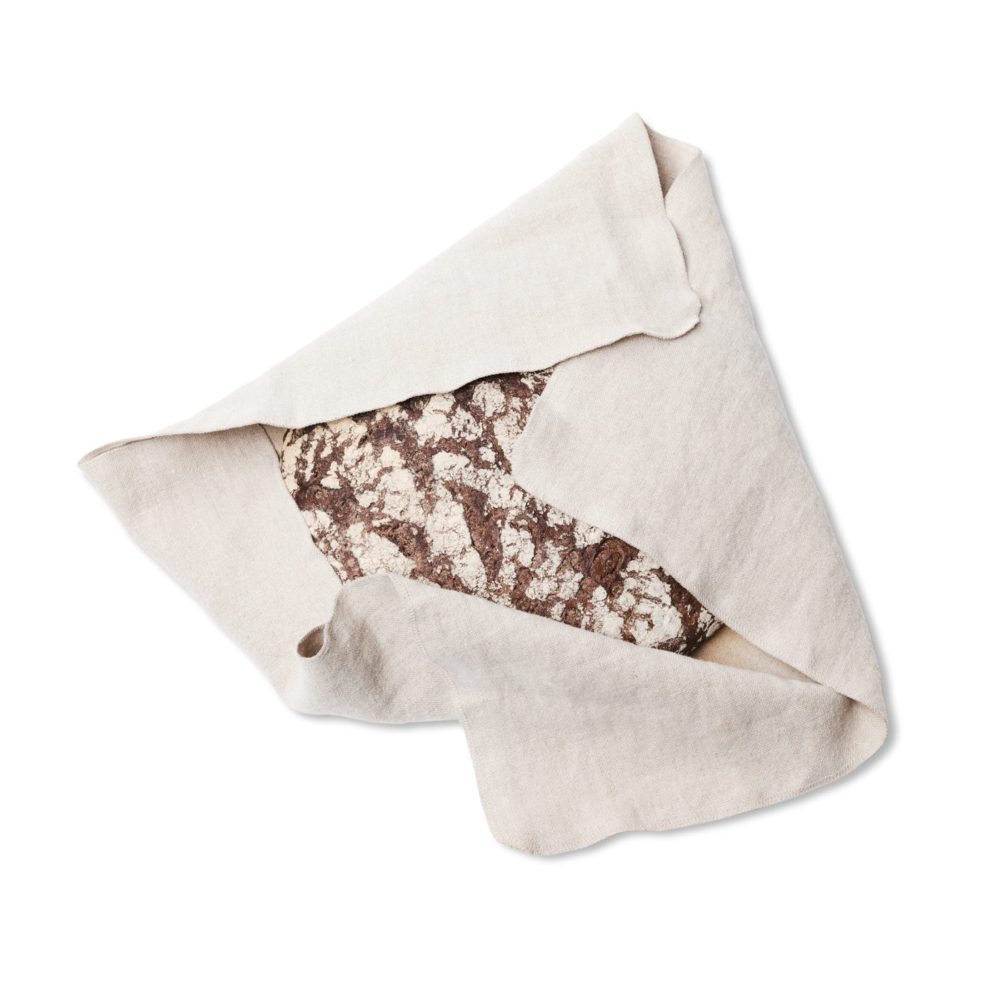
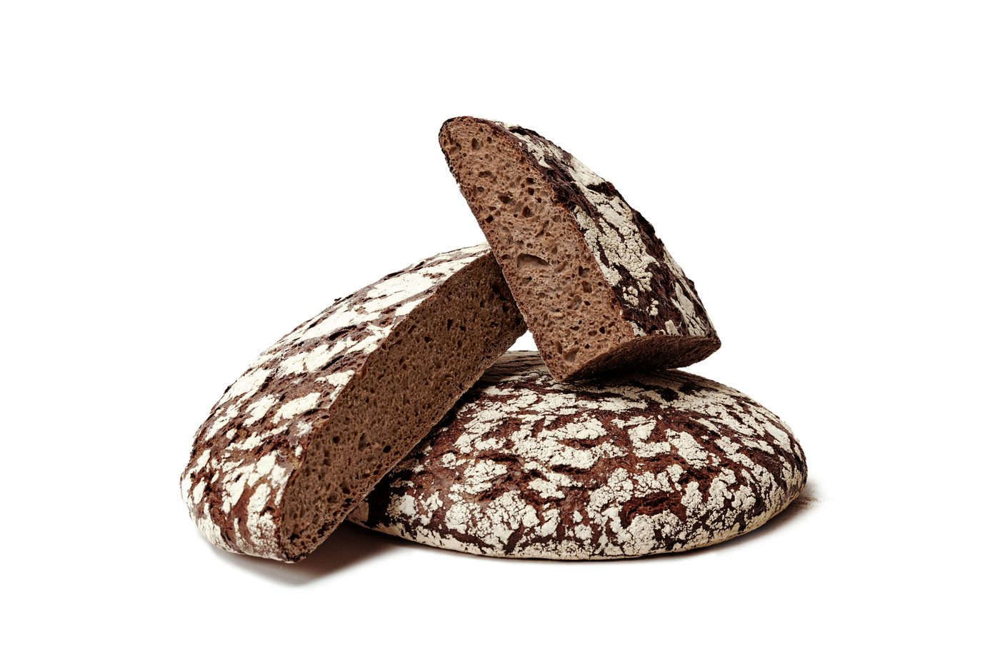
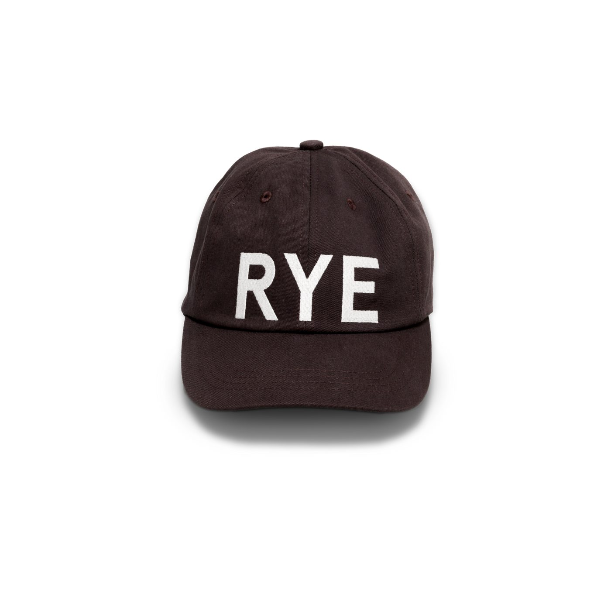
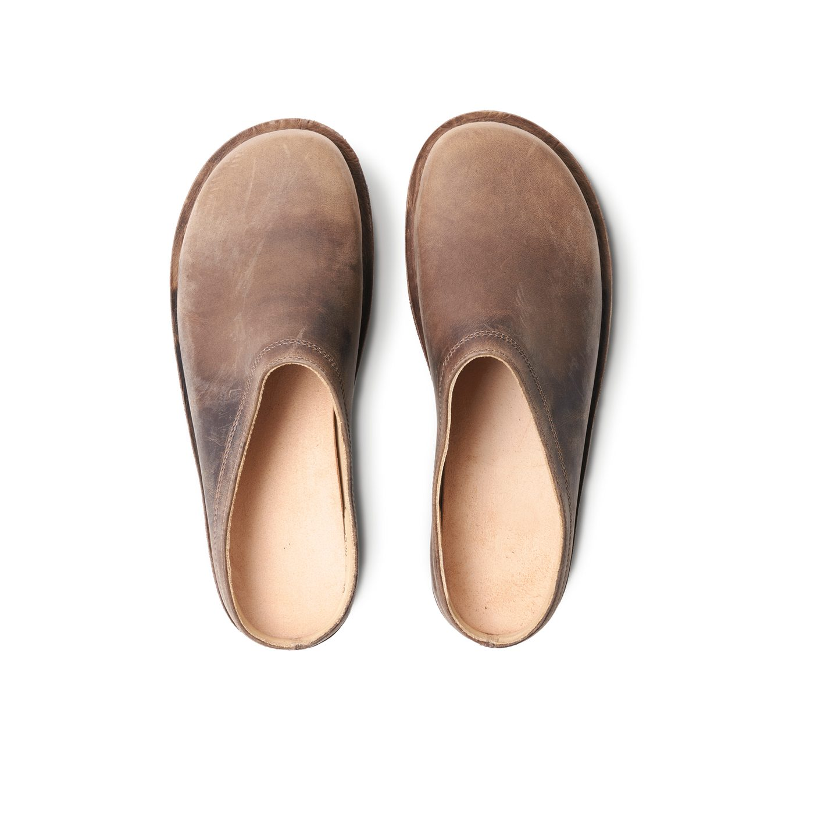

RYE by Martin Auer
Company study · 2026-11-20
One loaf, made slowly. RYE shows rye bread as a surface: a crackled crust, a dense crumb, a slice with a single topping. Everything sits alone on white, from the loaf to the linen cover, the cap and the clogs, in soft, even light with little contrast. Colors stay in the baked range of brown, tan, oat and linen, with one orange spread as the accent.


(01)

(02)

(03)

(04)

(05)

(06)

(07)Palette · measured from images
#FFFFFF#3D2823#B9540C#7C533F#D5CEC7#917A6FVisual themes
- Crust as surface
- Key motifs: cracked flour pattern, dense crumb, a wedge cut from the loaf. Sub motifs: top view, soft shadow-free light.
- Objects on white
- Key motifs: single products centered on a white ground. Sub motifs: top views, no props, no people, low contrast.
- Linen and leather
- Key motifs: natural linen cover, leather clogs, cotton cap. Sub motifs: folds, tan insole, white block letters.
- One accent spread
- Key motifs: orange pepper spread, salmon roe topping. Sub motifs: white bowl, open-faced slice.
Color palette
- White ground #ffffff
- The light ground behind every product.
- Dark crust #3d2823
- The darkest crust and the cap.
- Roe orange #b9540c
- Salmon roe and the red-pepper spread.
- Crust brown #7c533f
- Baked crust edges and the leather clogs.
- Linen #d5cec7
- The natural linen cover and flour dust.
- Crumb taupe #917a6f
- Crumb, bowl rim and light leather.
Visual elements
- Photography
- Cutout product images on a light ground, evenly lit from above, soft in contrast and saturation, shown alone with no people or scenery.
- Type and graphics
- A wordmark of spaced capitals, RYE over the line MARTIN AUER, on a cream ground.
- Layout habits
- The shop page is a grid of one-product tiles with names and prices; the story page explains the single loaf in short paragraphs.
Notable products
- RYE loaf
- One rye loaf, fermented up to 24 hours, the shop’s single bread.
- Spreads on RYE
- Listed from $6 to $14.
- Linen cover
- Natural linen loaf cover, listed at $55.
Method and limits
- Palette basis
- the seven board images on white; k-means in Lab, six clusters kept; the white ground fills about two thirds of the pixels and is listed as the first color
- Limits
- Pages read 2026-11-20 and 2026-11-23, plain HTTP fetch, no login: https://martinauer.com/ , https://martinauer.com/collections/products and https://martinauer.com/pages/about-rye. The shop serves its product images as cutouts with a transparent background at width 1400 of the same file; for this study they are placed on white, which stands in for the light page ground of the site and is not part of the files. There is no campaign photography on the pages read. Colors are measured from lit, edited photographs.
Credits and licenses
(01) Whole rye loaf seen from above, dark crust cracked into a pale flour pattern. RYE by Martin Auer. Brand image, study use. source
(02) Open-faced slice of rye bread topped with orange salmon roe. RYE by Martin Auer. Brand image, study use. source
(03) White bowl of orange red-pepper spread with a piece of rye bread. RYE by Martin Auer. Brand image, study use. source
(04) A loaf wrapped in a folded natural linen cover. RYE by Martin Auer. Brand image, study use. source
(05) Two rye loaves, one cut open to show the dense crumb, on a white plate. RYE by Martin Auer. Brand image, study use. source
(06) Brown cotton cap with RYE in white block letters. RYE by Martin Auer. Brand image, study use. source
(07) Pair of brown leather clogs seen from above, tan insole. RYE by Martin Auer. Brand image, study use. source